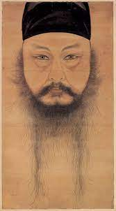
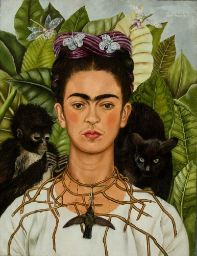

자화상
자화상
자화상이란 외부의 모습을 관찰하여 자신의 내면을 표현하는 것이다.
+Plus
자화상 vs 초상화
자화상은 '본인의 얼굴을 그린 그림'!
초상화는 '타인의 얼굴을 그린 그림'!
자화상을 그린 화가들
윤두서
조선시대 후기인 1668년~1715년에 활동한 화가로, 국보 제 240호에 등록된 '윤두서 자화상'을 그린 사실주의의 선비 화가이다.

빈센트 반 고흐
1853년~1890년의 네덜란드 화가이며, 주로 남프랑스에서 활동했으며, 자신의 심리 상태를 여러 가지 색채를 사용하여 나타낸 인상주의의 화가이다.

렘브란트
1606년~1669년의 네덜란드 화가이며, 집중되어야 할 부분을 밝게 표시한 '렘브란트 라이팅' 기법을 처음으로 만든 화가이다.

프리다 칼로
1907년~1954년까지 활동한 멕시코의 화가이며, 7살때 소아마비에 걸리고 남편이 바람을 많이 피는 등 매우 비극적인 삶을 살아온 화가이다. 그래서 프리다 칼로의 그림에는 대부분 비극적인 삶을 묘사하는 형태의 그림이 대부분이다.
